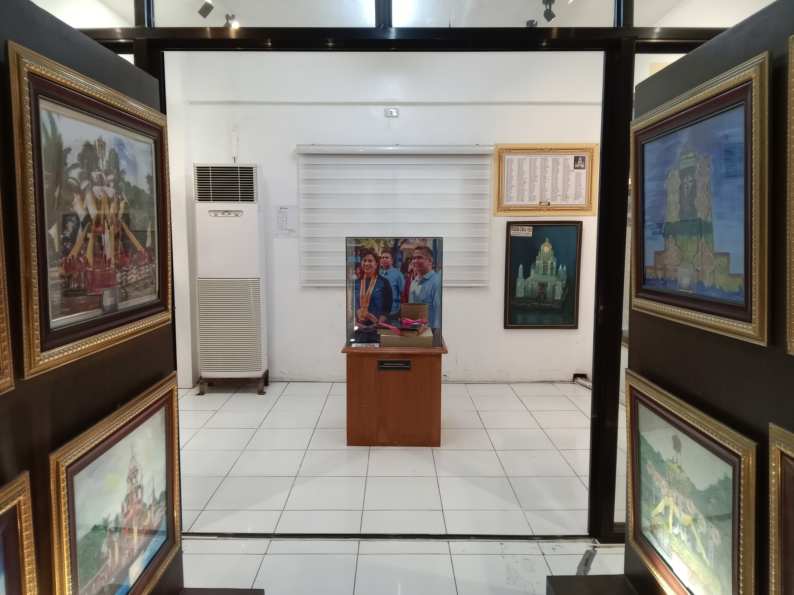
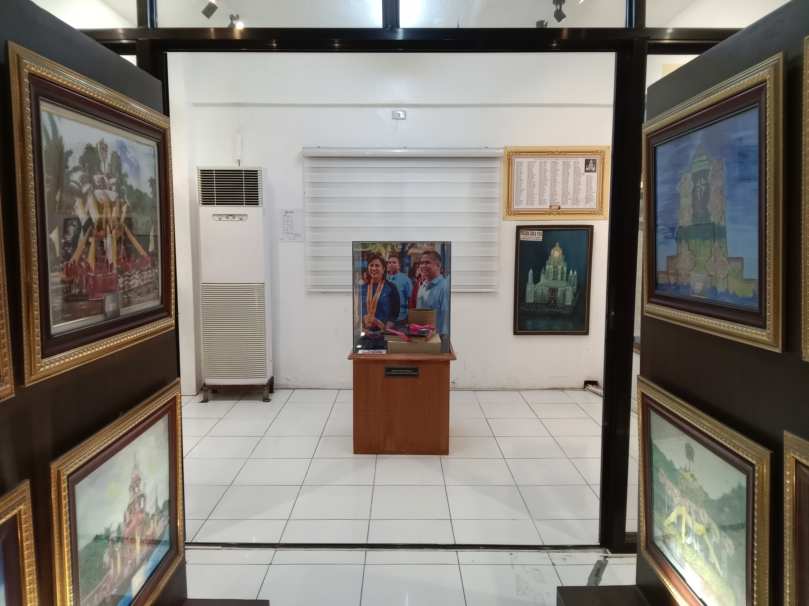

Welcome To The DYCI BINHI Museum
Welcome to the DYCI BINHI Museum, a digital space dedicated to preserving and celebrating the rich heritage of Bocaue, Bulacan. Explore the stories, traditions, and cultural treasures that shaped our river town—from its historic landmarks to its cherished festivals.
Explore NowWhat is DYCI BINHI?
DYCI-BINHI is an Interactive Learning Center for Bocauenos that envisions to provide a deeper understanding and appreciation of the history, religiosity, arts and the culture of our beloved town of Bocaue, Bulacan. BINHI stands for "Bocaue Institute for history and Information."
History
Tracing the Past, Understanding the Present
The history section presents the significant events, stories, and milestones that shaped Bocaue and its people. By exploring these narratives, visitors gain a deeper understanding of the community’s journey through time.
Heritage SitesLandmarks of Living History
Bocaue’s heritage sites are enduring witnesses of faith, tradition, and resilience. This section highlights historically significant locations that continue to shape the cultural landscape of the town.
Facts

Stories in Every Detail
Discover interesting facts and lesser-known information about Bocaue’s history, culture, and traditions. These details reveal how everyday life contributes to the town’s rich historical identity.
ResearchBuilding Knowledge Through Historical Inquiry
The research section showcases documented studies, records, and scholarly works related to local history and culture. BINHI supports academic exploration to ensure that heritage is preserved through credible and well-grounded research.
MemorabiliaFounder of the DYCI.
The Memorabilia Collection of DYCI-BINHI showcases a curated selection of artifacts, documents, photographs, and personal items that reflect the milestones of Dr. Yanga’s Colleges, Inc. and the rich heritage of Bocaue. Each piece serves as a tangible reminder of the people, traditions, achievements, and historical moments that shaped the institution and the community.
Sto-NinoSto. Niño of DYCI BINHI
The Sto. Niño of DYCI BINHI represents one of the most cherished symbols of faith and cultural heritage within the school community. It highlights the deep devotion of Dynans to the Holy Child, reflecting values of humility, hope, and guidance. Through the Sto. Niño display, the BINHI Museum preserves a meaningful part of DYCI’s traditions, reminding visitors of the school’s long-standing connection to spirituality and Filipino identity.
Pagoda PaintingsDYCI BINHI's Pagoda Paintings.
The Pagoda Paintings at DYCI BINHI showcase the rich cultural heritage and artistic traditions of our community. Each painting captures the unique architecture, vibrant colors, and intricate details of the pagodas, reflecting both history and creativity. Visitors can appreciate how these artworks preserve local stories and celebrate the beauty of Filipino artistry.
Back to Top
 
